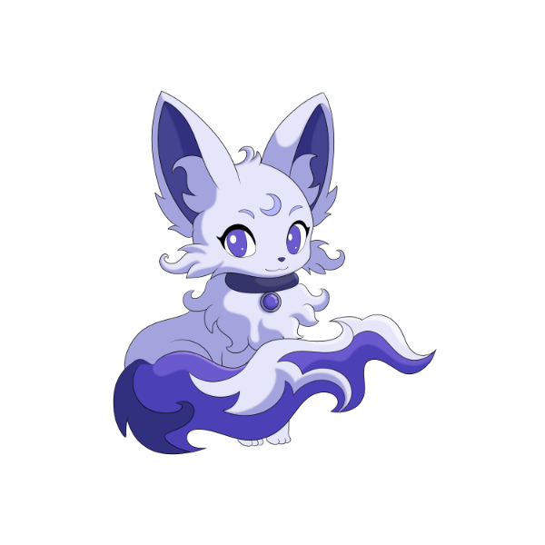
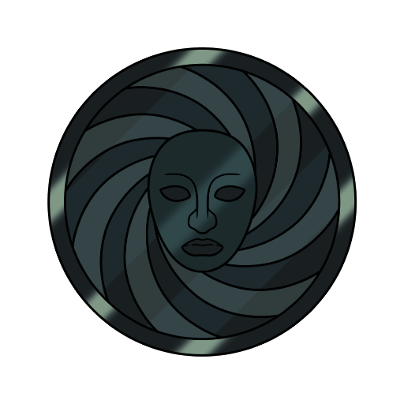
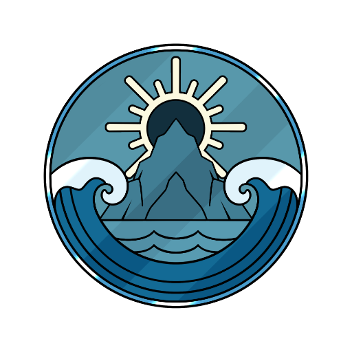
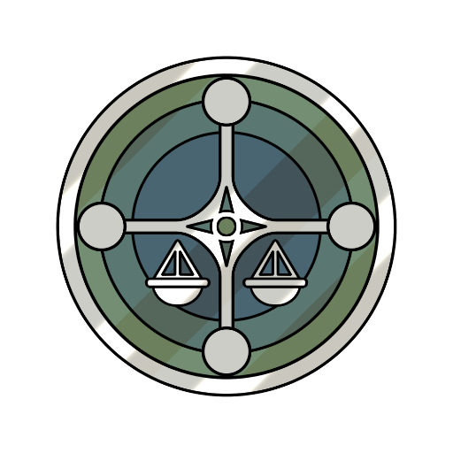
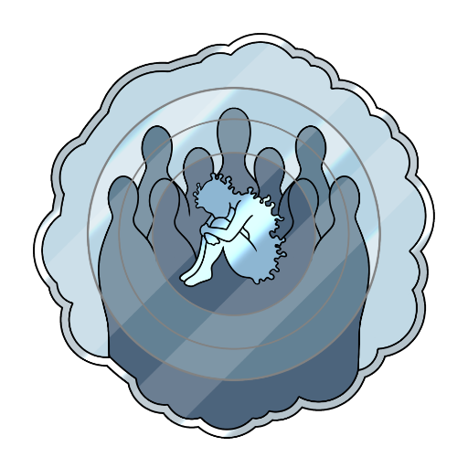
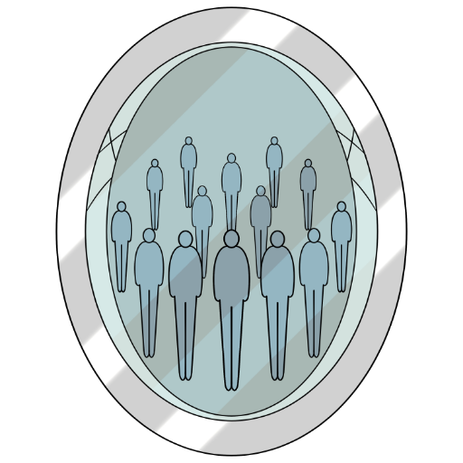
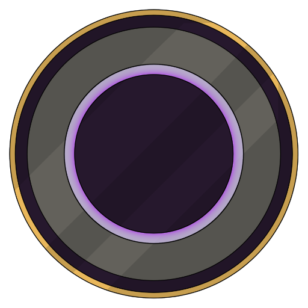

NETTUNO
Disturbi d'Ansia
Sei disturbi d'ansia, uno per scheda.
SILEN SU NETTUNO

Silen 
La forma di Silen dedicata a questa collezione.
Silen in forma nettuniana accompagna la collezione sui disturbi d'ansia: paura improvvisa, preoccupazione costante, rituali e risposte al trauma. Le sei schede sono attacchi di panico, ansia generalizzata, disturbo ossessivo-compulsivo, ansia sociale, mutismo selettivo e stress post-traumatico.LE LUNE DI NETTUNO
Sei disturbi d'ansia, uno per scheda.
Ogni scheda ha due voci: Cos'è, la spiegazione chiara, e La luna racconta, come si vive e cosa può aiutare. Divulgazione: non sostituisce il parere di un professionista. Le storie stanno nei libri.

Attacchi di Panico
Spaventano moltissimo. Non sono pericolosi.
Un attacco di panico è un'ondata improvvisa di paura intensa, con sintomi fisici forti — cuore in gola, mancanza d'aria, vertigini — che raggiunge il picco in pochi minuti. Spaventa moltissimo, ma non è pericoloso: capire cosa succede nel corpo è il primo passo per gestirlo.
Questa illustrazione è riprodotta su calamite, spille e adesivi.
Vai su Redbubble
Disturbo d'Ansia Generalizzata
Non significa pensare troppo: è ansia che resta accesa.
Il disturbo d'Ansia Generalizzata è una preoccupazione costante e difficile da controllare per molte cose della vita quotidiana — lavoro, salute, famiglia — accompagnata da tensione, stanchezza e difficoltà di concentrazione. Non significa pensare troppo: è un'ansia che resta accesa anche quando non c'è un motivo reale.
Questa illustrazione è riprodotta su calamite, spille e adesivi.
Vai su Redbubble
Disturbo Ossessivo-Compulsivo
Non è amore per l'ordine: sono rituali contro l'ansia.
Il disturbo ossessivo-compulsivo è fatto di ossessioni — pensieri intrusivi, spesso terrificanti — e compulsioni, i rituali messi in atto per placarle. Non è amore per l'ordine: le compulsioni non piacciono a chi le compie, e servono solo a spegnere l'ansia per poco.
Questa illustrazione è riprodotta su calamite, spille e adesivi.
Vai su Redbubble
Disturbo d'Ansia Sociale
Non è timidezza: è paura del giudizio.
Il disturbo d'Ansia Sociale è la paura persistente di essere giudicati o messi in imbarazzo davanti agli altri. Non è timidezza: l'ansia anticipatoria può far evitare scuola, lavoro e relazioni, anche quando si vorrebbe partecipare.
Questa illustrazione è riprodotta su calamite, spille e adesivi.
Vai su Redbubble
Mutismo Selettivo
Non è testardaggine: è un blocco d'ansia.
Il mutismo selettivo è un disturbo d'ansia dell'infanzia in cui il bambino parla liberamente in alcuni contesti, tipicamente in famiglia, e non riesce a parlare in altri, come la scuola. Non è testardaggine né una scelta: è un blocco d'ansia che si affronta con interventi graduali e ben guidati.
Questa illustrazione è riprodotta su calamite, spille e adesivi.
Vai su Redbubble
Disturbo da Stress Post-Traumatico
Non è reagire male: è la risposta del cervello al trauma.
Il disturbo da stress post-traumatico può comparire dopo un evento percepito come terrificante: ricordi intrusivi e flashback, incubi, evitamento di ciò che ricorda l'evento, allarme costante. Non significa reagire male: è una risposta del cervello al trauma, che terapie specifiche — come l'EMDR o le terapie cognitivo-comportamentali — sanno trattare.
Questa illustrazione è riprodotta su calamite, spille e adesivi.
Vai su RedbubbleINFORMAZIONI E LICENZE
Una Voce Dal Profondo è un progetto di divulgazione psicologica e narrazione. Le opere sono tutelate da diritto d'autore: i libri escono su Amazon e le illustrazioni sono riprodotte su oggetti da Redbubble — entrambe le piattaforme gestiscono la vendita e mi corrispondono le royalties. Per collaborazioni, richieste professionali o licenze:
Iscriviti alla nostra mailing list
Novità su libri, storie e nuove lune: qualche email, mai di più.
Se il modulo qui sopra non funziona, apri l'iscrizione in una nuova scheda
Ogni riproduzione non autorizzata è vietata.